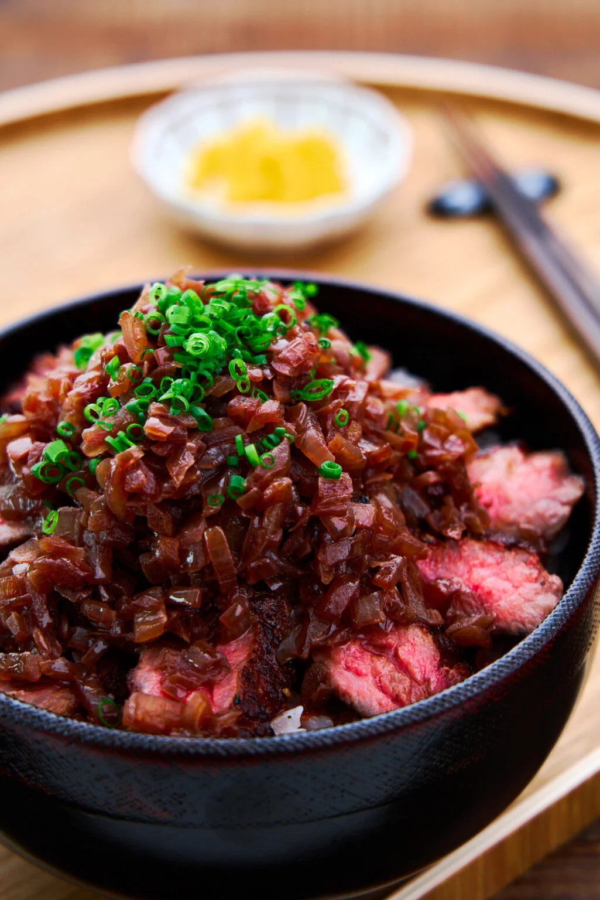

Chaliapin Steak Don

A Chaliapin Steak Don inspired by the anime Food Wars.
In this recipe, the enzymes in the onions tenderize the steak while adding flavor. The rice
bowl also contains sauce made from caramelizing onions with soy sauce and red wine, which is then
fortified with butter.
Ingredients
- 270 grams steak
- 350 grams onions (finely diced)
- ¼ teaspoon salt
- Black pepper
- 1 tablespoon vegetable oil
- 2 tablespoons soy sauce
- ⅓ cup red wine
- 2 tablespoons cultured unsalted butter
- 2 servings Japanese short grain rice (2 rice cooker cups cooked in rice cooker)
- 70 grams umeboshi (10% sodium, pitted and minced)
- Scallions (chopped for garnish)
Steps